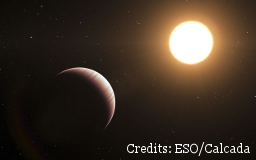
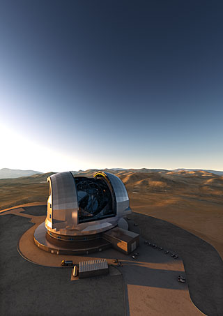

| Matteo Brogi | |||||||||
|
|||||||||
Exoplanets and their atmospheresThe discovery of planets orbiting other stars radically changed our idea of how planetary systems form and evolve. The astonishing diversity of the thousands of known exoplanets inspires two fundamental questions: how common is our Solar System? Is there another Earth out there? How do we study exoplanet atmospheres? Up to few years ago, only the atmospheres of transiting planets could be studied. When a planet crosses the disk of its parent star or it is occulted by it, we observe a small decrease in the total light coming from the system. By measuring this dimming at various wavelengths, it is possible to infer the structure and composition of a planet atmosphere, and how the incoming energy from the star gets redistributed. At very high spectral resolution (R > 20,000), molecular bands are resolved into a dense forest of spectral lines. Each species shows a unique pattern, and their "fingerprint" can be recognised by comparing observations to models via a technique called cross correlation.  Since planets move along the orbit, their spectrum is also subject to a rapidly-changing Doppler shift. This allows us to effectively disentangle the signature of an exoplanet from the stationary, dominant absorption of the Earth's atmosphere. With infrared high-resolution spectroscopy, the radial velocity of a transiting planet was measured directly for the very first time, and carbon monoxide was detected in the atmosphere of τ Boötis b. Thanks to the direct detection of the planet radial velocity, we can now study the atmospheres of non-transiting planets and estimate their true masses and the orbital inclinations. Planet rotation, as well as winds, leave a very specific imprint on the shape of the spectral lines. At very high spectral resolution, the broadening and distortion caused by global atmospheric circulation has been detected for both young, giant planets on large orbits and transiting hot Jupiters. The current decade is bringing an extrordinary development in observations of exoplanets at high spectral resolution. Instruments with wide spectral range allow us to detect the signatures of multiple molecular species at once. A novel statistical technique that I co-designed allows us to measure abundances and temperature from high-resolution observations, providing quantitative constraints on atmospheric composition as precise as those achievable from space with the next-generation JWST. With enough planets observed, these measurements will shed light on the preferential channel(s) of planet formation and early evolution. The future of high-resolution spectroscopy for exoplanet atmospheres is bright.
Modern spectrographs collect more photons and cover a larger fraction of the planet spectrum at once, increasing our sensitivity to smaller and cooler planets. Upcoming missions are also designed to find smaller planets around bright stars, which are ideal candidates for characterisation. Combining other techniques, such as low-resolution spectroscopy and direct imaging, with high-resolution spectroscopy will drastically improve the measurements of atmospheric parameters in the coming years. |
|||||||||
| You are in: Home > Research | |||||||||